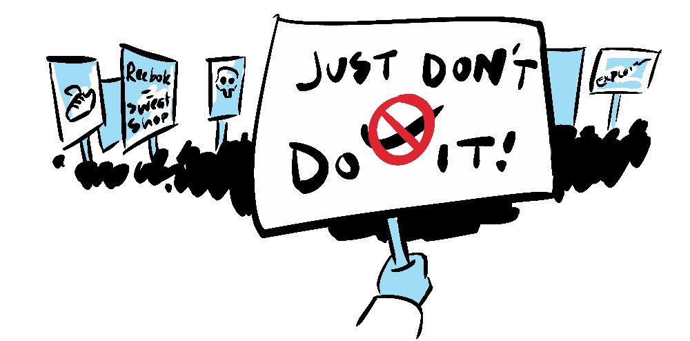

GINI GLOBAL INEQUALITY INDEX

In the '90s, the term "Sweat Shops" re-entered the vernacular in a big way—an ugly feature of a bourgeoning global economy. Companies like Nike and Reebok were slated for their exploitation of cheap labour in countries with poor working conditions, all the while selling shoes for $200.
"But what's the real cost? 'Cause the sneakers don't seem that much cheaper" - Flight of the Conchords
There was an understandable uproar from liberal voices in the population and the media, and it was this picture of evil sweat shops that, for a long time, comprised my perspective of globalisation.
While all this negativity was going on, global inequality, which had been steadily growing for decades, began to reverse. The Gini index—a measure of the prevalence of inequality in the world, draws an optimistic picture.
GINI GLOBAL INEQUALITY INDEX
It turned out, all of this exploitative behaviour was, over time, slowly funnelling wealth from wealthy countries to the developing world, and driving an industrial boom in countries such as China, India, Bangladesh and Korea. This funnel, however imperfect was, and still is, reducing global income inequality dramatically, and with it driving down extreme poverty.
Foreign Affairs Magazine reports that...
... around 20 years ago, global inequality began to fall, largely thanks to the economic rise of China, which until recently was the world's most populous country. Global inequality reached its height on the Gini index of 69.4 in 1988. It dropped to 60.1 in 2018, a level not seen since the end of the nineteenth century.
The lack of media attention on such benefits and the enduring image of sweat-shop workers has left many liberals with an impression of globalisation as a wholly negative project. Meanwhile, working-class people on the right became aware of the detrimental effect globalisation had on their livelihood as they lost jobs to cheaper overseas manufacturing. This forged an unlikely alliance of leftists and working-class conservatives against the blight of globalisation, leaving a vulnerability for populists and demagogues to exploit.
It's a strange one, because it comes with an ambiguous lesson. Do we take from this that unfettered exploitation leads to greater equality? And does this mean that activism against exploitation is actually counter-productive?

First, let's break it down, where is the prosperity coming from? Is it coming from the exploitation or the resulting exchange of capital for labour?
The latter. So, in short, exploitation is not necessary.
For both parties (capital and labour) to agree to an arrangement it must be mutually advantageous, so it can't be absolutely exploitative. The issue of exploitation therefore concerns the relative advantage and payoff for both parties, where the more powerful party (capital) can force an arrangement with vast advantages for itself, and the smallest marginal gains for the other (labour).

This arrangement, rather than lifting those providing the labour out of poverty, would hold them in a perpetual master-slave relationship.
So, is activism for worker's rights counterproductive? Not at all. If we (the activist consumer) demand worker protections and fair wages we address the balance in the distribution of gains in favor of the workers, while still maintaining a situation that is positive-sum (advantageous to both labour and capital).
As it turns out, this is exactly what happened, although the media largely ignored the resulting actions of companies like Nike and Reebok to address the negative aspects of cheap labour, this included audits, minimum wages and minimum age requirements.
So, even in lieu of state labour protections, consumer activism can accelerate the transfer of wealth from rich countries to poor.

Activism, in this case, appears to be an example of a self-defeating prophecy. Where, in successfully augmenting market forces towards a positive result, it contributes to a picture of the free-market naturally adapting* and creating that positive result. This can leave people claiming that the activism was unnecessary, when it was in fact instrumental. I get the same in my day job as a documentary editor, if I do my job well, the audience will assume the story told itself.
Two take-aways from this exploration:
- Even at its worst, globalisation can have positive effects.
- The benefits of globalisation do not preclude the need for rights advocacy.
Like any system, globalisation has its problems—like the pollution associated with excessive production and transport of goods around the globe and the continuing asymmetry of human rights—but while this is true, it's important to remember that the combination of global trade with rights advocacy yields significant gains for the most vulnerable around the world.

Addressing global inequality in this way not only lifts people out of poverty but also promotes interdependence rather than division, which is vital to tackling the global issues we face.
While global inequality is reducing, I haven't dealt with the "first world problem" of inequality within wealthy countries growing. This is a problem, but I didn't want to pitch it as the inverse of globalisation, because doing so would be echoing the zero-sum logic that any benefit globally must be paid for at an equal national cost—essentially the narrative spread by right-wing politicians claiming "foreigners are taking your jobs". It is true that some jobs are lost to globalisation, but the benefit to those in extreme poverty in the developing world far outweighs the cost to those workers in wealthy countries. It is estimated that from 2004 to 2015 between 150,000—300,000 US jobs were offshored annually. Though there are not specific offshoring statistics globally, if we assume the same rate of offshoring from all other OECD countries (net offshorers) we're looking at about 1 million annually which, over that time period, works out to about 12 million. A higher estimate by, McKinsey estimated global job offshoring to equate to 1.7 million in 2003 and 4.1 million in 2008. If we take 4.1 million to be about the average over the period we're looking at about 50 million. If we take these two estimates there were between 10 and 50 million jobs offshored globally from 2004 to 2015.
During this same period the number of people living in extreme poverty reduced from 1.9 billion to 736 million. That's more than a billion people taken out of extreme poverty.
In addition to this, much of the cost-saving of those jobs being shifted overseas became profit for companies in wealthy countries. So, the GDP of wealthy countries may have even been positively affected by offshoring, but that wealth shifted from low-wage workers to wealthy owners and shareholders.
The way I see it, there is still plenty of wealth in wealthy countries, the issue with inequality within those countries is one of wealth redistribution, which I advocate for in many other posts. And its telling that those most vocal about jobs being offshored, or worse, taken by immigrants, are the same politicians that advocate for reducing taxation and redistribution within their own countries. It's almost as if they don't really want to solve the problem of national or global inequality. I wonder what sort of incentive